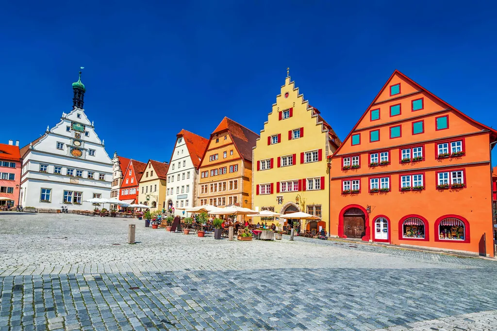
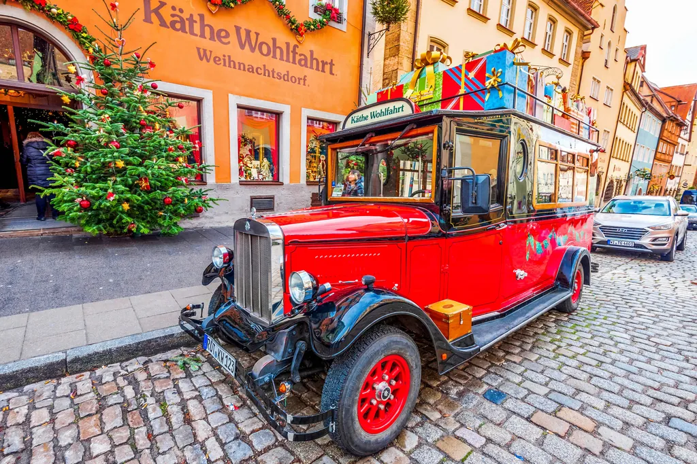
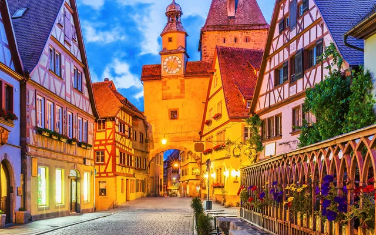
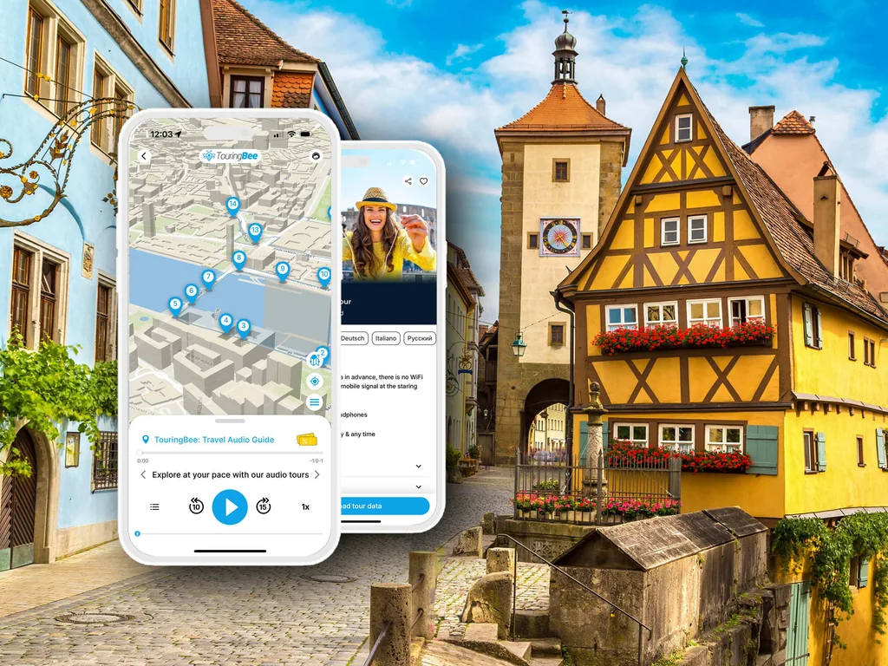

Rothenburg ob der Tauber no Natal: quando ir para ver a vila de conto de fadas
Datas do mercado, o que fica aberto em dezembro e a hora que decide toda a visita.
Comprar o audioguia Plano de um dia Respostas rápidasEm meados de dezembro o sol põe-se sobre Rothenburg ob der Tauber às 16:20. O mercado de Natal fecha às 19:00, às 20:00 à sexta e ao sábado. Faça as contas e chega ao que nenhum postal mostra: vai ver esta vila às escuras, sob fios de luzes, com as mãos à volta de uma caneca quente. Não é prémio de consolação. É a visita.
Então — será Rothenburg ob der Tauber mesmo a vila de Natal de conto de fadas da Alemanha, ou é frase inventada pelos operadores turísticos? As duas coisas, honestamente. O cenário existe: muralha medieval completa, casas de empena, uma praça que manda na vila desde a Idade Média. As multidões também existem e, durante seis horas a meio do dia no Advento, o sítio pertence aos grupos de autocarro. Este guia ensina a ficar com a primeira parte sem a segunda.
Pode levar a história da vila consigo pelo caminho: o audioguia TouringBee de Rothenburg funciona em dezembro como em junho — 25 paragens, offline, nos seus ouvidos. Faça o percurso à tarde, enquanto há luz, e volte à praça quando as luzes acendem. A ordem é todo o truque, e já voltamos a ela.
Ainda a planear a viagem toda? Comece pelo nosso guia completo de Rothenburg ob der Tauber, e depois volte aqui para os detalhes de Natal.
Num relance
- Mercado 2026
- Reiterlesmarkt, 20 de novembro – 23 de dezembro
- Encerrado
- Só um dia — Totensonntag, 22 de novembro
- Horário
- Dom–Qui 11:00–19:00 · Sex–Sáb 11:00–20:00
- Dimensão
- 61 bancas em quatro largos interligados
- Pôr do sol
- 16:20 em meados de dezembro — o mercado vive à noite
- Melhor hora
- 16:00–17:00, enquanto o céu ainda guarda azul
A resposta curta
Sim, se vier pelas noites. Rothenburg ob der Tauber dá o seu melhor no Advento, e o mérito cabe menos ao mercado do que à vila à volta — não olha para um mercado à porta de um centro comercial, olha para um mercado dentro de uma vila medieval murada que nunca foi modernizada.
Não, se vier em excursão a meio do dia em dezembro à espera de um conto de fadas. Entre as 11:00 e as 16:00, mais ou menos, o centro histórico enche, a luz achata-se em cinzento e o mercado perde a magia toda. O ambiente regressa ao anoitecer, o que em dezembro quer dizer por volta das quatro e meia.
E não, se vier fora das datas do mercado. Mais sobre isso abaixo — é a desilusão mais comum de todas, e quase nenhuma página o avisa.
Reiterlesmarkt: datas, horários e o que lá está mesmo
Em 2026 o mercado decorre de 20 de novembro a 23 de dezembro. Fecha exatamente um dia, Totensonntag, 22 de novembro — o dia alemão de memória dos mortos, em que a Baviera suspende o entretenimento público. Apareça nesse domingo e encontra uma praça vazia e dezenas de casotas de madeira fechadas.
São 61 bancas, espalhadas por quatro espaços ligados: o Marktplatz em frente à câmara municipal, o Grüner Markt logo a norte, o Kirchplatz junto à igreja de São Tiago, e o Lichthof coberto dentro da própria câmara. Percorre-se tudo em quinze minutos. Para padrões alemães, é um mercado pequeno, e é precisamente por isso que soa a vila em festa e não a feira comercial.

Um palco no Grüner Markt recebe todos os dias bandas de sopros das aldeias francónias em redor. No segundo andar da câmara acende-se todas as noites uma nova janela do Advento , desenhada por turmas das escolas locais e por grupos de jovens — uma tradição à escala de aldeia que sobrevive numa vila que há muito vive do turismo.
Vale a pena planear a noite de abertura: um cavaleiro entra na praça a cavalo, saúda a multidão, o presidente da câmara fala e a árvore acende.
O Reiterle: o fantasma que virou figura de Natal
A maioria dos mercados alemães tem nome de santo, de praça ou de produto. O de Rothenburg tem nome de fantasma.
A brochura da própria vila di-lo sem rodeios: o Reiterle «tem a sua origem histórica num passado distante. Para os nossos antepassados era um enviado de outro mundo, que no inverno flutuava pelo ar com as almas dos mortos.»
É a crença pré-cristã do pleno inverno — as semanas escuras em que se julgava que os mortos cavalgavam o céu. Ao longo dos séculos a figura suavizou-se e hoje abre um mercado de Natal a cavalo e acena às crianças.
Cuidado com as datas. O serviço de turismo da vila liga a tradição do mercado ao século XV; a Deutsche Bahn fala de uma história que recua «mais de 500 anos». Nenhuma das versões se prende a um documento, por isso a posição honesta é esta: o início da tradição é difícil de datar.
Fique na praça na noite de abertura e vê a versão domesticada de um presságio de morte a abençoar uma rua de comércio.
Käthe Wohlfahrt: o Natal que nunca fecha
Na Herrngasse, a um minuto da praça do mercado, há uma loja graças à qual há quem venha a Rothenburg pelo Natal nos outros onze meses do ano.
O Weihnachtsdorf de Käthe Wohlfahrt — a Aldeia de Natal — ocupa uma loja enorme de decoração natalícia alemã montada como uma aldeia coberta: uma árvore iluminada e rotativa com vários metros, casinhas de madeira, quebra-nozes do Erzgebirge, pirâmides, Schwibbögen, bolas de vidro, aos milhares. Abre todo o ano, domingos incluídos, o que na Alemanha é mesmo invulgar.

O espaço está desenhado para que sair sem saco pareça um erro. Também é, numa terça-feira chuvosa de março, o único sítio da vila onde ainda é dezembro.
O Museu Alemão do Natal: no andar de cima da loja
No mesmo edifício, por uma escada que arranca dentro da loja, fica o Deutsches Weihnachtsmuseum. Confundem-se os dois a toda a hora. A loja vende; o museu explica.
Lá dentro guardam-se decorações raras do século XIX e do início do século XX: figuras de tragacanto e de algodão, enfeites de fio leónico, as primeiras bolas de vidro, bonecos fumadores de incenso, calendários do Advento, presépios. Uma secção à parte trata dos portadores de presentes rivais da tradição alemã — São Nicolau, o Christkind, o Weihnachtsmann. Se alguma vez se perguntou porque é o Menino Jesus a trazer prendas na Baviera e o Pai Natal em Hamburgo, a resposta está aqui.
A entrada custa €5.00 para adultos, €2.00 para crianças dos 6 aos 11, €4.00 reduzida e €11.00 para bilhete de família. Horário no Advento: de segunda a quinta 10:00–17:30, sexta e sábado 10:00–18:00, domingo 10:00–17:00; no resto do ano abre todos os dias 10:00–17:00. Conte 45 minutos a uma hora. Não tem acesso sem degraus.
No próprio Natal mantém horário reduzido: 24 de dezembro 10:00–13:00, 25 e 26 de dezembro 10:00–16:30, 31 de dezembro 10:00–13:00, 1 de janeiro 10:00–16:30.
O que comer e beber
A cozinha aqui sabe a Francónia, não à Alemanha genérica.
Schneeballen pertencem à vila e aparecem em todas as montras — novelos de massa quebrada do tamanho de um punho, fritos, polvilhados com açúcar em pó à moda antiga, hoje também em versões de chocolate e de noz. O serviço de turismo da vila diz que a receita tem séculos. Conselho honesto: compre um pequeno para partilhar. São secos por natureza, e um inteiro por cabeça é um compromisso.
Nas bancas, passe à frente do Glühwein normal e procure as versões locais:
- Quittenglühwein — vinho quente de marmelo, mais ácido e menos enjoativo do que o de uva; há também uma versão de produtor, do vale do Tauber
- Feuerzangenbowle — um pão de açúcar embebido em rum e incendiado sobre a taça de ponche; tanto teatro como bebida
- Met num corno de beber — hidromel, vendido de forma tão ridícula como soa, e tão certo como isso numa vila medieval
- Fränkisches Rotbier — cerveja ruiva da Francónia, um estilo local de longa maturação a frio, para quem quer algo que não seja doce
Para comer: bratwurst de meio metro, Käsespätzle, Leberkäse, castanhas assadas, pão de especiarias, Stollen, gebrannte Mandeln. Há sopas veganas e bratwurst vegana — coisa que não se dizia deste mercado há dez anos.
Uma nota prática que evita chatices: a caneca tem caução, e há uma banca própria para a devolver. Fique com a caneca se gostar dela — é permitido, a caução paga-a.
A vila depois de escurecer — e a hora que conta
Na prática, o mercado vive à noite, e tem uma hora que funciona. Entre as 16:00 e as 17:00, mais ou menos, o céu ainda guarda azul, as luzes já acenderam e as janelas brilham. É essa a fotografia. Depois das 17:30 o céu fica preto e o contraste endurece; antes das 16:00 as luzes perdem-se na luz cinzenta do dia.

Onde se colocar:
- Plönlein — a bifurcação de duas ruelas em torno da casa amarela de enxaimel, e a vista mais reconhecível de Rothenburg. Em dezembro está iluminada. Vá antes de o mercado abrir ou depois das 19:00 se a quiser sem gente.
- Marktplatz — a árvore, a fachada da câmara, a janela do Advento acesa no segundo andar.
- A muralha — um troço do adarve coberto às escuras, com o ruído do mercado em baixo e a vila iluminada pelas seteiras. Quem vem só de passagem quase nunca chega aqui.
- Herrngasse vista na direção da praça, com as lojas iluminadas dos dois lados.
Pode levar tripé, e vale a pena — a muralha tem parapeitos que fazem o mesmo serviço.
O que mais abre em dezembro
O mercado não esgota a vila, e o horário de dezembro é mais curto do que o de verão. Atualizado para a época 2026/27:
- Torre da Câmara — durante o mercado, todos os dias 10:30–14:00 e 14:30–18:00, até às 19:00 de sexta a domingo. 4 € adultos, 2 € menores de 14, só dinheiro. 220 degraus, e todo o centro histórico iluminado lá de cima.
- Museu Medieval do Crime — 2 de novembro de 2026 a 6 de janeiro de 2027, todos os dias 11:00–16:00, última entrada às 15:15. Nos sábados do Advento (28 de novembro, 5, 12 e 19 de dezembro) fica aberto até às 17:00. 10,50 € adultos.
- Igreja de São Tiago e o Altar do Santo Sangue de Riemenschneider — 5 € adultos, 3,50 € reduzido, grátis até aos 12. Um sítio para aquecer e olhar para a talha sem pressas.
- A ronda do Guarda-Noturno decorre durante todo o Advento, todas as noites às 21:30, até 23 de dezembro inclusive. 8 € adultos.
- A muralha — grátis, aberta a qualquer hora, sem hora de fecho.
A parte honesta: Rothenburg fora das datas do mercado
Este parágrafo devia existir em todas as páginas sobre o Natal em Rothenburg ob der Tauber e quase nunca existe.
Depois de 23 de dezembro, o mercado desaparece. Não abranda — desaparece. As casotas são desmontadas, a praça esvazia. Há quem reserve a semana entre o Natal e o Ano Novo à espera do mercado das fotografias e encontre uma vila medieval silenciosa e fria. A armadilha repete-se do outro lado: no início de novembro não há mercado, não há luzes e os museus abrem pouco.
A camada de Natal permanente — Käthe Wohlfahrt, o Museu do Natal — continua aberta, e as decorações do centro histórico ficam até ao fim do Advento. Mas o mercado tem datas fixas. 20 de novembro a 23 de dezembro de 2026. Reserve dentro delas.
Um dia ou dormida?
Dormida, se a escolha for sua. Uma excursão a partir de Munique, Frankfurt ou Nuremberga deixa-o em Rothenburg entre as 11:00 e as 16:00 e leva-o embora antes da hora azul — ou seja, antes da parte que justifica a viagem. A tarifa do estacionamento diz o mesmo pelo lado: os autocarros pagam entre as 09:00 e as 18:00 e estacionam grátis depois.
Fique uma noite e ganha o centro histórico às 22:00, com as luzes acesas e ninguém lá dentro, a melhor hora que Rothenburg tem. Se a excursão for a única opção, inverta o horário habitual: chegue tarde, salte o mercado do meio-dia, percorra a vila e a muralha enquanto há luz e guarde as duas últimas horas para a praça já de noite.
Um plano de Natal de um dia que funciona
13:30 — Chegada. Largue a bagagem. Café, Glühwein ainda não.
14:00 — O percurso TouringBee por Rothenburg: a muralha, o Plönlein, a Herrngasse, as ruelas calmas atrás da praça. Noventa minutos a passo de inverno, e o percurso acaba junto ao mercado.
15:30 — O Museu Alemão do Natal, ou a Torre da Câmara pela vista sobre a vila iluminada. Escolha um; ambos levam cerca de uma hora, e o museu aquece mais.
16:20 — Pôr do sol. Esteja lá fora. Primeiro o Plönlein, depois suba até à praça enquanto o céu muda.
17:00 — O mercado. Coma primeiro, o Glühwein a seguir, por esta ordem. Repare na janela do Advento na câmara.
18:30 — Um troço de muralha às escuras.
21:30 — A ronda do Guarda-Noturno, se estiver a decorrer, ou jantar numa sala francónia bem aquecida.

Passeio a pé por Rothenburg — audioguia autoguiadoAcesso imediato
- 100% offline — sem Wi-Fi nem dados
- Mapa GPS offline — cada faixa é iniciada por si no local
- 25 paragens, do Marktplatz ao Hospital Bastion
- Percorra em 1,5–2 horas, ao seu ritmo
Notas práticas
Datas, preços e horários verificados para a época 2026/27. Confirme nos sites oficiais antes de viajar — mudam todos os anos.
Tempo. Frio e cinzento mais vezes do que límpido e branco. Em dezembro as máximas diurnas rondam os 4–5 °C, as noites ficam nos zero graus ou pouco abaixo, e chove mais do que neva. Neve cai, e quando cai a vila transforma-se — mas não reserve a viagem a contar com isso.
O que vestir. Vai passar horas de pé, ao ar livre e às escuras: casaco a sério, gorro, luvas e sapatos que aguentem calçada molhada. O caminho da muralha é irregular e há troços sem luz.
Como chegar. Rothenburg ob der Tauber não tem estação de linha principal — muda-se em Steinach (b Rothenburg) para o comboio de ligação, normalmente vindo de Würzburgo, Ansbach ou Nuremberga. De carro, sai-se da A7. Uma armadilha de inverno: o autocarro da Estrada Romântica não circula em dezembro — só funciona de maio a meados de setembro.
Reservas. Uns milhares de camas para uma vila de 11 400 habitantes, e os fins de semana de Advento dentro das muralhas esgotam com meses de antecedência. Para dormir no centro histórico em dezembro, reserve no verão.
Perguntas frequentes
Quando é o mercado de Natal de Rothenburg em 2026?
O Reiterlesmarkt decorre de 20 de novembro a 23 de dezembro de 2026 e fecha um único dia, Totensonntag, a 22 de novembro. O horário é 11:00–19:00 de domingo a quinta e 11:00–20:00 à sexta e ao sábado.
Vale a pena visitar Rothenburg no Natal?
Sim, se montar o dia à volta da noite. O mercado é pequeno — 61 bancas — mas assenta dentro de uma vila medieval murada e completa, e é isso que lhe dá o aspeto das fotografias. Venha na hora antes e depois do pôr do sol, não a meio do dia.
O mercado de Natal abre depois do Natal?
Não. Termina a 23 de dezembro. A semana entre o Natal e o Ano Novo não tem mercado nenhum — é o erro mais comum de quem reserva Rothenburg no inverno.
O que é o Reiterle?
A figura que dá nome ao mercado. Na crença pré-cristã, um cavaleiro que levava as almas dos mortos pelo céu de inverno; ao longo dos séculos suavizou-se numa figura natalícia simpática, que hoje abre o mercado a cavalo.
Qual é a diferença entre a Käthe Wohlfahrt e o Museu Alemão do Natal?
A Aldeia de Natal da Käthe Wohlfahrt é uma loja, aberta todo o ano. O Museu Alemão do Natal fica no andar de cima, ao fim de uma escada dentro da loja, e cobra 5 € de entrada.
Neva em Rothenburg no Natal?
Às vezes, sem garantias. Dezembro fica em média nos 4–5 °C de dia e perto dos zero graus à noite, e chove mais do que neva.
Dá para visitar Rothenburg num só dia no Natal?
Dá, a partir de Munique, Frankfurt ou Nuremberga — mas a excursão normal traz o regresso antes de escurecer, que é quando o mercado dá o seu melhor. Se puder, durma lá.
Continue a explorar
Alguns links de saída deste site são links de afiliado. Se reservar por um deles, podemos receber uma pequena comissão, sem custo extra para si. O audioguia TouringBee é produto nosso. Consulte a nossa Divulgação de Afiliados.
Percorra Rothenburg com todas as histórias nos ouvidos
Vinte e cinco paragens do Marktplatz ao Hospital Bastion — em dezembro, às escuras, com as luzes acesas.
Obter o audioguia — desde 9,99 €